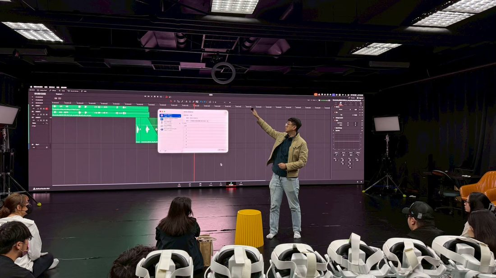
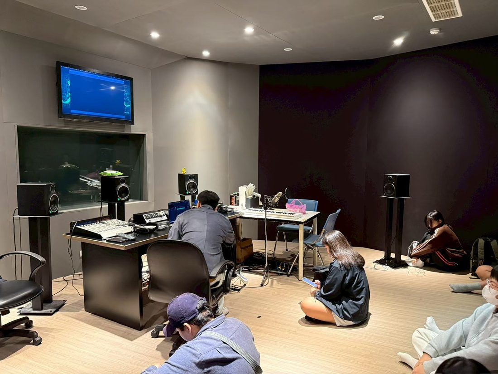
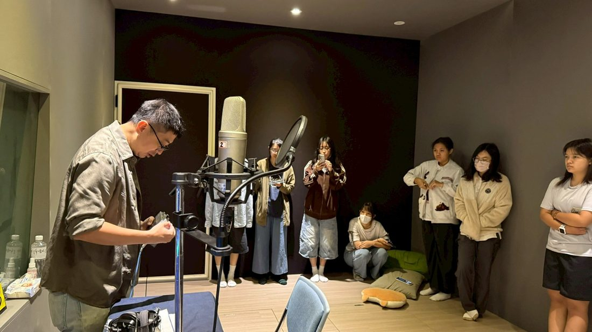
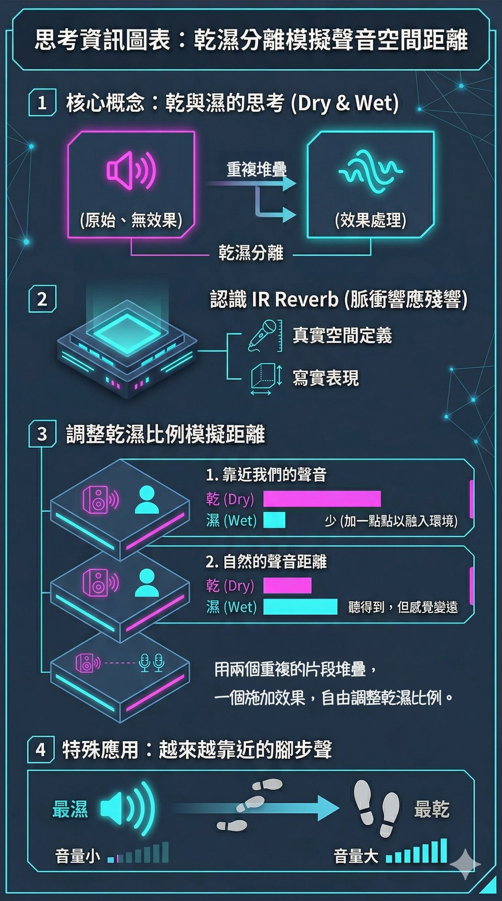
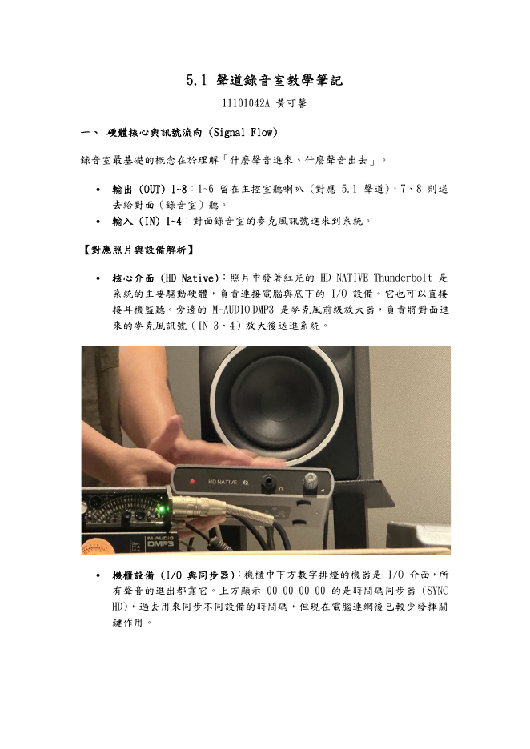
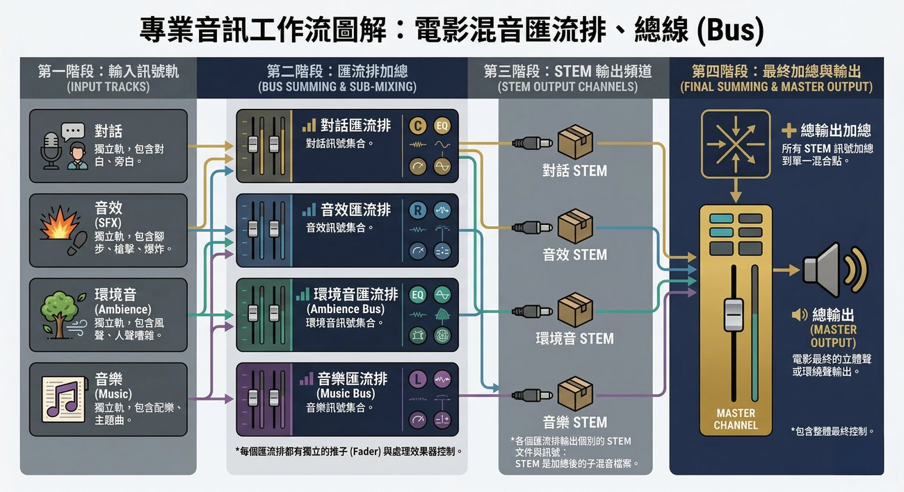

ElevenLabs
以語音合成與聲音置換支援 ADR 練習，讓學生比較原始配音、AI 置換與表演可信度之間的差異，同時納入 AI 語音合作條款與模型刪除規範。
114 學年度第二學期｜義守大學影視系專業選修
以 5.1 環繞錄音室為核心場域，串接觀影分析、LLM 思考協作、ElevenLabs ADR、Suno AI 配樂、Krotos 音效設計與 Pro Tools 混音，將 AI 工具放回電影聲音工藝的完整流程中檢驗。
COURSE INTENT
本課程由陳嘉暐老師授課，重點不只在工具操作，而是訓練學生從劇本、場景、情緒與空間出發，規劃人聲、音效、環境音與音樂如何共同服務影像敘事。
以語音合成與聲音置換支援 ADR 練習，讓學生比較原始配音、AI 置換與表演可信度之間的差異，同時納入 AI 語音合作條款與模型刪除規範。

以劇本情緒分析、音樂標籤設計與反覆生成，訓練非音樂背景的影視創作者把情緒曲線轉譯為配樂語言。

透過環境音生成與直覺化擬音表演，縮短尋找素材的時間，將課堂重心移回「聲音如何成為角色」的設計判斷。
LEARNING PATH
課程以五個階段推進：先讓身體感知不同聲道與空間，再進入 AI 工具、聲音劇本拆解、錄音室實作，最後以《鋼琴課》片段進行聲音重製與反思。
從《大藝術家》與多部學生作品出發，讓學生比較默片、Stereo 與 5.1 聲場的敘事差異；課堂練習也同步導向畫外空間、距離與聲音來源的判斷。
以畫外聲音建立空間深度，練習觀眾看不見但能被聲音引導理解的敘事資訊。
學生以 LLM 輔助觀影心得與聲音觀察整理，同時開始接觸語音置換短影音，從「文字如何描述聲音」前進到「聲音如何改變角色」。

透過短影音格式快速測試 AI 聲音的辨識度、角色感與敘事效率。
導入 Suno、ElevenLabs 與 Krotos Studio Pro，讓學生理解 AI 產出必須回到剪輯、同步、情緒曲線與混音判斷中檢驗。

把 AI 生成音樂放入影像脈絡中測試，理解情緒標籤、節奏與畫面剪輯之間的關係。
學生進入 50208 環繞錄音室，進行 ADR 人聲配音與 Foley 實體擬音，學習麥克風距離、同步點、表演力與錄音室工作秩序。

保留學生現場配音的表演質地，作為後續 AI 置換與聲音可信度比較的基準版本。
學生整合 AI 產出、現場錄音與 Foley 素材，完成影片片段的全面聲音重新設計；課堂也以 Dry / Wet 效果器比例作為混音判斷練習，讓學生比較原始聲、處理聲與最終聲場之間的差異。

以 AI 語音置換處理同一段素材，讓學生從音色、口氣、同步與倫理規範四個層面進行討論。
SELECTED STUDENT NOTES
以下選入 3 篇具代表性的學生筆記：一篇由老師錄音室教學轉錄稿整理成高品質 5.1 技術筆記，一篇呈現從 2.0 到 5.1 的觀影理解轉換，一篇則把錄音室聆聽、社會議題與聲音技術連在一起。

這篇筆記以老師錄音室教學轉錄稿為基礎，將口語講解轉化為可複習、可操作的技術文件，整理錄音室硬體、訊號流、監聽控制、DaVinci Resolve 5.1 設定、粉紅噪音校準與 Cue Bus 對講流程。
這篇心得從元宇宙製片場的觀影經驗出發，將 5.1 聲道理解為安排注意力、引導情緒流動的聲音語法，並以三部作品對照聲音如何承載壓迫、成長與家庭修補。
這篇線上心得從《白色隧道》《一點一滴的死》《白蟻》預告片、《雄影》與《波希米亞狂想曲》切入，特別能把聲場技術、議題理解與觀眾身體感受整合在一起。
50208 SURROUND STUDIO
錄音室提供完整 5.1 聲道監聽配置，包含 L、C、R、LS、RS 與 LFE，學生能直接觀察喇叭配置、混音位置與輸出結果如何改變觀影經驗。

CLASSROOM DOCUMENTATION
AI REFLECTION SURVEY
依據課程資料夾中的期末問卷 CSV 匿名彙整，共 15 份有效回覆。分析重點放在學生如何使用 AI、如何評估 AI 聲音品質，以及對未來混音師角色的理解變化。
回覆顯示，AI 已實際進入學生的期末個人混音作業：15 位回覆者中有 14 位表示使用 AI 工具。學生最常提到的價值不是「取代創作」，而是快速產生素材、提供初步想法、節省錄音或搜尋素材的時間，讓創作者能把更多精力放在篩選、同步與混音判斷。
前六週的場域聆聽訓練也有明確回饋。14 位學生認為在不同空間看電影、聽電影，有助於判斷 AI 生成結果是否真實、自然，代表課程不是直接把 AI 當捷徑，而是先建立聽覺標準，再用這個標準檢驗 AI 產物。
限制面則集中在控制力與創作主體性：最多人指出 AI 難以精準控制輸出的細節與風格，其次是擔心過度依賴、削弱個人創作能力。這也呼應課程最後的反思：AI 能加速聲音生產，但電影混音師仍必須負責情感判斷、素材取捨與最後的藝術決策。
多選題，分母為 15 份有效回覆。
15 份有效回覆中，沒有學生給 1 或 2 分；分布集中在 4 到 5 分，顯示學生整體認為 AI 學習對未來發展有正向幫助。
學生並未把 AI 理解為單純替代人力，而是把混音師看成更需要判斷與整合能力的角色。
EVIDENCE
本頁整理課堂資料夾內的評分總表與課程文件，將學習歷程轉換為可讀的成果指標。觀影心得共 57 份，涵蓋 26 位學生。
作業從默片觀察、多聲道影片到錄音室聆聽逐步加深，平均評分 82.6，最高 94。